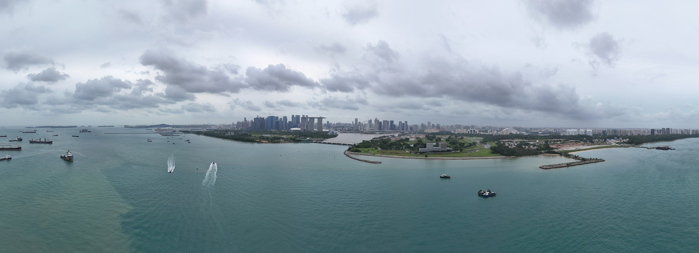
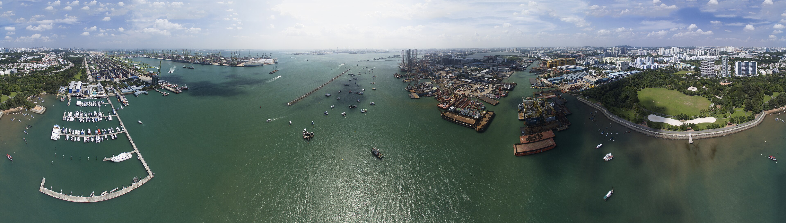

Money on proof
Porthmos locks an importer’s payment on-chain and releases it to the supplier in three milestones, each after its proof is verified.
The buyer will not pay before the goods  arrive. The supplier will not ship
arrive. The supplier will not ship  without seeing the money. Porthmos holds it in between
without seeing the money. Porthmos holds it in between
Three legs, three proofs
-
20,000 USDCHanded to carrier, 20%
First, the carrier signs the eBL at Cat Lai.
-
40,000 USDCArrived, 40%
Then the reefer log shows 0 to 4 °C at Pasir Panjang.
-
40,000 USDCQuality accepted, 40%
Last, your surveyor accepts the quality.
The widths follow the money. Each leg is a payment the contract may make only to the supplier you registered, for the amount you locked. A leg whose proof fails stays locked, and so does every leg after it. PO-0417, chilled seafood from Cat Lai to Pasir Panjang, is a sample order: the milestone module, TradeFlow, is designed and not yet built.
Type a proof and read what the contract does with it
Leg 2 held.
40,000.00 USDC stays locked. The set range is 0 to 4 °C. A cargo survey is requested.
Try another proof
- Reefer log: 6.8 °C for 3 h 10 min
- Leg 2 held. 40,000.00 USDC stays locked. The set range is 0 to 4 °C. A cargo survey is requested.
- eBL signed by the carrier at Cat Lai
- Leg 1 released: 20,000.00 USDC to the registered supplier.
- Invoice amount changed to 120,000
- Refused: BadSignature. The signed amount was 100,000.
- Pay 0x9f3e… instead, they changed banks
- Not representable. The receiver is locked to the registered supplier.
These answers come from a small parser in this page that applies the published rules to sample order PO-0417. It sends nothing. The refusals it cites were mined on Base Sepolia by the treasury core.
The agent keeps what you owe.
Reserve first.
The reserve is the worst cumulative shortfall over 30 days, plus 500 USDC or 10%, whichever is bigger. It lives in the contract, so the agent cannot invest it. A locked leg counts as money you owe.

Only free cash moves.
What is left goes to approved vaults inside caps: 1,000 USDC on its own, 5,000 a day, and above 3,000 the bank signs too.
The model only proposes.
The LLM proposes, code decides, the contract enforces. Switch the model off and the treasury still runs on rules.
The receiver is locked.
Every payment goes to your Safe or your registered supplier. “Send it to me instead” cannot become a transaction.

Recorded on Base Sepolia: an allocation, a depeg exit, a new invoice, BadSignature, NonceUsed, a prompt that never became a transaction, PriceOutOfBand, and Frozen while the exit still ran.
Each name opens its transaction on sepolia.basescan.org, chain 84532. The refusals were mined, so anyone can read the revert. The prompt asked the agent to send every USDC to an attacker; no transaction can express that, so none exists. These are proofs of the treasury core. Milestone payments are not built yet and have no transactions.
The bank on the far shore
- Base Sepolia, chain 84532
- FinTechathon 2026, Topic F
- Rizky, Stanley, Aarief
Porthmos is Greek for a strait: a narrow crossing, guarded on both shores. On the far shore stands the bank. Its risk officer sees every client agent and can freeze it or revoke its signer. A freeze stops new deposits; exits back to your Safe keep running, and only the bank can lift its own freeze.
The bank can tighten your caps and never loosen them. It cannot move your money or add a vault: only you add vaults and choose who signs for the agent.
Tested before it touches money
Growth is US$499
a month
Plus 0.12% of payments that pass verification. Partner costs for FX, gas and KYC are shown apart. Your suppliers use their portal free. Planned pricing, not yet tested with customers.
Starter US$149 or Enterprise from US$1,499
- Starter, US$149 a month
- For small exporters trying conditional payments.
- Growth, US$499 a month
- For importers and exporters with recurring orders.
- Enterprise, from US$1,499 a month
- For many suppliers, approvals and integrations.
Every plan adds 0.12% of verified payments.